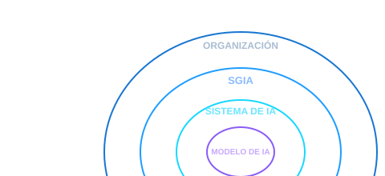
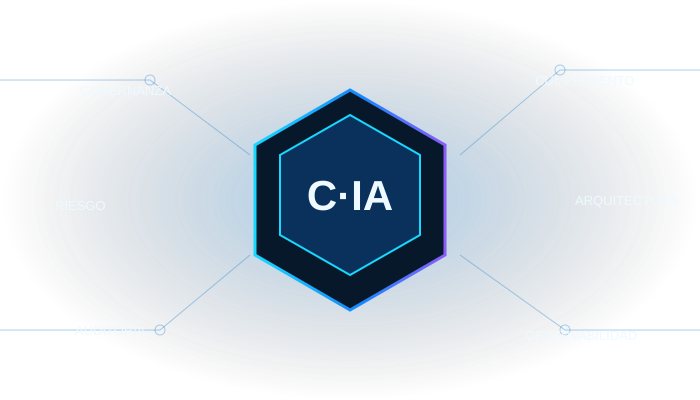

SGIA: mucho más que modelos
Desde el modelo hasta el Sistema de Gestión de IA de la organización.

Arquitectura, seguridad, auditoría y GRC de sistemas de IA. Guías con criterio, artefactos que se descargan y herramientas que se usan. Sin humo: lo que una IA genérica no te va a dar.

Selecciona un pilar para explorar sus activos y recursos.
Políticas, roles, comités y gobierno del ciclo de vida de la IA.
Evaluaciones de riesgo, ISO/IEC 42001, EU AI Act e impacto regulatorio.
Inventario, Shadow AI, model cards, ciclo de vida y monitorización de modelos.
Hardening técnico para LLM, RAG, agentes, MCP y modelos de IA.
Checklists, planes, evidencias e informes de auditoría técnica y de SGIA.
Playbooks y procedimientos para incidentes específicos de IA.
Patrones de arquitectura, RAG, agentes, APIs, ZTNA y referencia segura.
Catálogo de pruebas, casos de uso, metodologías y técnicas de evaluación adversarial.
Logging, métricas, trazabilidad, detección de anomalías y SLOs para IA.
Guías y baselines para Azure, AWS y Google Cloud aplicados a IA.
SBOM, procedencia de modelos, datasets, dependencias y riesgos de terceros.
Calidad, privacidad, trazabilidad, retención y linaje de datos para sistemas de IA.
Scripts, IaC, políticas como código, orquestación y controles técnicos automatizados.
Desde el modelo hasta el Sistema de Gestión de IA de la organización.

Aprende con orden y llévate artefactos utilizables.